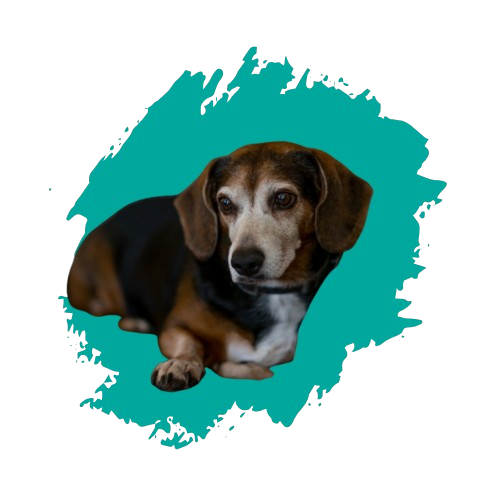
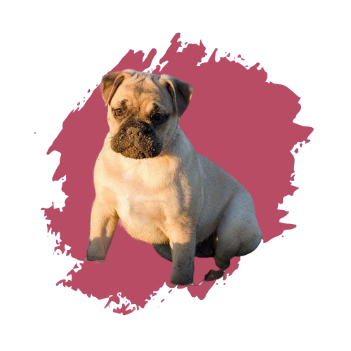
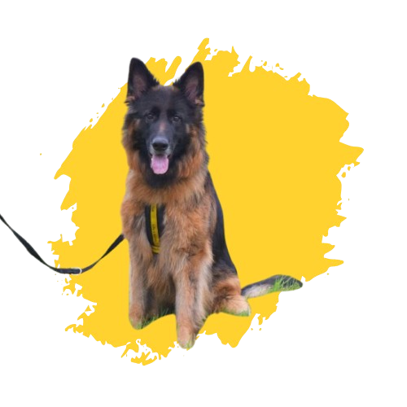
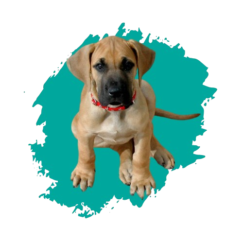

Exercise Needs: High - Enjoys Running and Playing Fetch
Griffin is a sweet and affectionate Lab who would love a home where he can be someone's loyal shadow.
He thrives on attention and outdoor play.
Odie
Name: Odie
Breed: Beagle
Age: 1.5 Years
Temperament: Curious, Playful, Energetic
Size: Medium
Good With: Kids, Other Dogs
Exercise Needs: Moderate - Loves Walks
Odie is a cheerful explorer who enjoys being around people and fellow pets.
He's always up for a game or a sniffing mission!


Dug
Name: Dug (Rescue Dog)
Breed: Bulldog
Age: 4 Years
Temperament: Calm, Affectionate, Slightly Lazy
Size: Medium
Good With: Calm Dogs, Apartment Living
Exercise Needs: Low - Enjoys Short Walks and Naps
Dug was rescued from a tough start but hasn't let it affect his big heart.
He's a snuggler and couch potato who's looking for a peaceful home where he can finally relax and be loved.
Jackie
Name: Jackie (Rescue Dog)
Breed: German Shepherd
Age: 3 Years
Temperament: Protective, Intelligent, Loyal
Size: Large
Good With: Adults, Experienced Dog Owners
Exercise Needs: High - Needs Active Play and Stimulation
Jackie was rescued from a neglectful situation and has made an incredible recovery.
He's highly intelligent, eager to please, and ready for a loving, active home where he can continue to thrive.


Scooby
Name: Scooby
Breed: Great Dane
Age: 2 Years
Temperament: Gentle, Goofy, Affectionate
Size: Small
Good With: Kids, Large Spaces, Calm Environments
Exercise Needs: Moderate - Enjoys a Daily Walk and Lounging
Scooby is a big softie.
He's easygoing and loves to lounge with his favorite humans after a stroll.
Max
Name: Max
Breed: Golden Retriever
Age: 2 Years
Temperament: Happy, Loving, Easygoing
Size: Large
Good With: Everyone - Kids, Dogs, Strangers
Exercise Needs: Moderate to High - Enjoys Active Family Life
Max is the definition of a golden boy. He's cheerful, affectionate, and fits beautifully into just about any family.